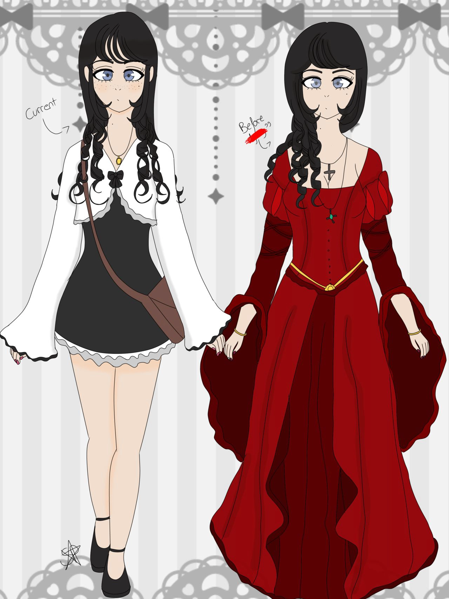
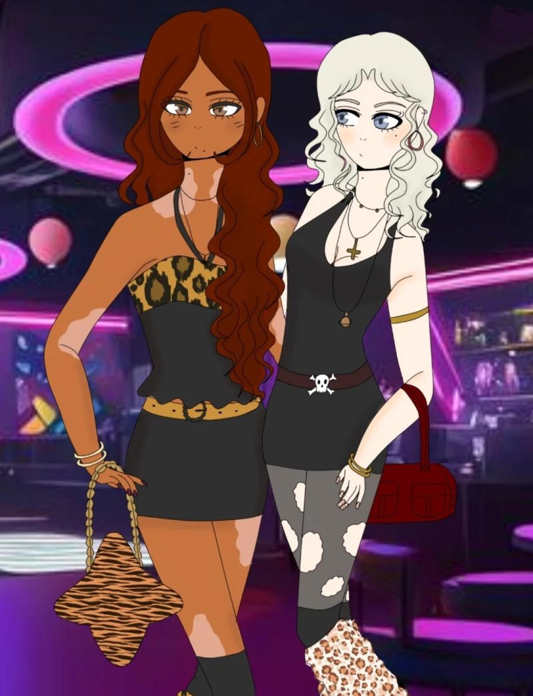

Mi personaje, Min Müller, que dibujé para un proyecto futuro. Este dibujo iba a ser un boceto, ya que sigue en desarrollo, pero quería probar su paleta de colores.

Otro diseño de personajes. Esta vez, de la protagonista (Suki) de una historia que estoy escribiendo para un libro a forma de proyecto personal. Estos fueron sus bocetos iniciales probando su paleta de colores.

Dibujo de mis personajes para un proyecto personal.